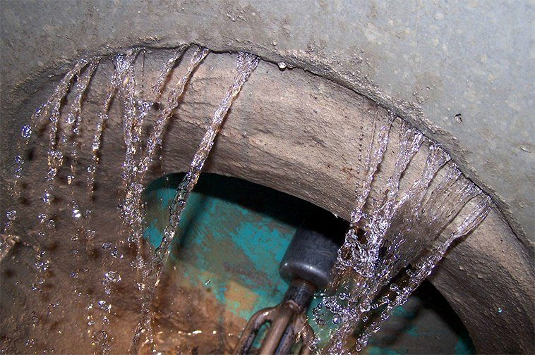
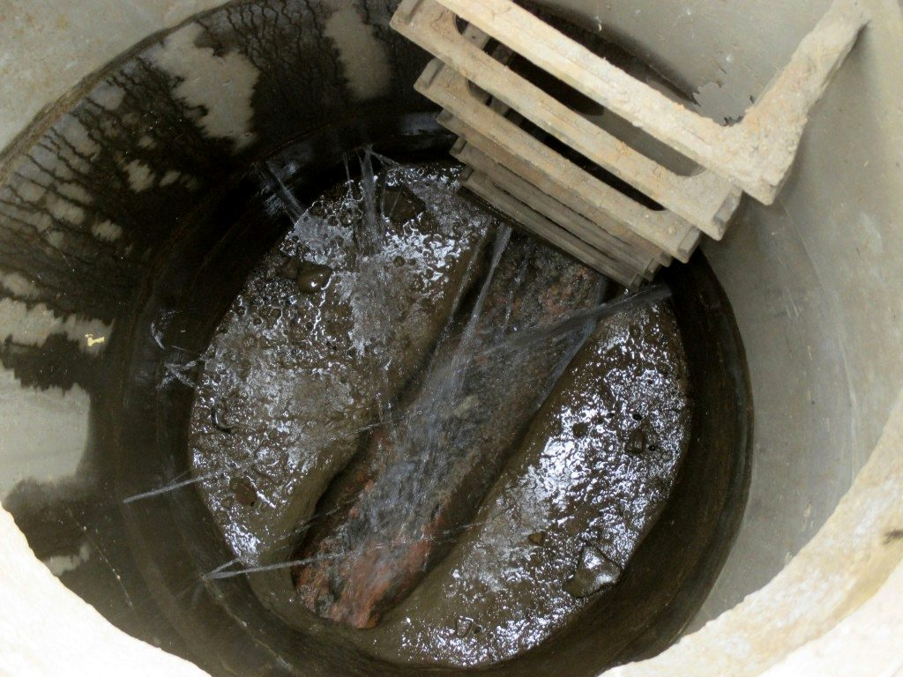

Inflow & Infiltration Studies
Find where stormwater and groundwater enter the sewer, and how much, so investment goes where it counts.
At a glance
- 6 to 12 weeksA typical short term study, through wet weather
- Every 1 to 5 minutesLogging that captures storms and the daily pattern
- ATEX and IECExIntrinsically safe equipment for live networks
- Rain gauges in the catchmentEach response tied to the rain that caused it
Stormwater and groundwater getting into the sewer is one of the most expensive problems a council or utility can have, and one of the hardest to see. Finding it is what EDS does best.
Industry data suggests inflow and infiltration (I&I) can make up half the flow in an older network during a storm. Left alone, it hides the true capacity of the system, muddies the hydraulic model and skews investment planning, so pipes and plants end up sized too big or too small.
We measure where the water gets in and how much, so your money goes to the repairs that make the biggest difference.


Why I&I matters
Results from the field
Twenty short term flow meters and on-site rain gauges showed three subcatchments carried 65% of the I&I. Capital went into relining and inflow reduction instead, and peak wet weather flows fell 35% within two years.
Our I&I services
- Find the sources
Flow meters and rain gauges across the catchment show which subcatchments let the water in, and how much.
- Watch it happen
Intrinsically safe meters report over 4G, so you see each storm’s response as it happens.
- Plan the fix
A ranked remediation plan built on your own data, instead of blanket rehabilitation.
- Ongoing support
We keep the monitoring and the fixes working long after the study ends.
What you gain
- Fewer overflows
Less stormwater in the sewer means fewer untreated discharges into local waterways.
- Lower treatment costs
Every litre of rain you keep out of the sewer is a litre you don’t have to pump and treat.
- Assets that last longer
A network that is not overloaded in every storm lasts longer and fails less often.
- Compliance you can show
Data that demonstrates you are meeting environmental regulations and standards.
Short term and long term monitoring
Most I&I programs use one or both. The right choice depends on the decision the data has to support.
| Compared on | Short term | Long term |
|---|---|---|
| Typical duration | 6 to 12 weeks, through wet weather | Continuous, across seasons and years |
| What it answers | Where I&I enters, and how much, in each subcatchment | The baseline infiltration load, and how it varies through the year |
| Best used for | Ranking subcatchments for CCTV, manhole surveys and repairs, and storm data for model calibration | Seasonal groundwater infiltration and persistent defects that short studies can miss |
| Capital decisions | Fast evidence for rehabilitation and planning decisions | Whether a capacity upgrade or targeted rehabilitation is the more cost effective outcome |
| After the works | A baseline to measure against | Proof of whether past interventions worked |
Monitoring done properly
- High resolution logging, typically at 1 to 5 minute intervals, so storm events and the daily pattern are captured accurately
- Pre-installation inspections that assess hydraulics, access and the risk of ragging or debris before a site is chosen
- Intrinsically safe equipment for live networks, certified under ATEX and IECEx
- Rain gauges in the catchment, so each wet weather response is attributed to the rain that caused it
- QA/QC throughout: data validation, calibration checks and remote telemetry for the length of the program
From data to action
In EDS’s experience, consistent with findings across the water industry, about 20% of a sewer network typically accounts for 80% of its I&I. Finding that 20% is what makes a program pay back.
- Targeted remediation
Data driven prioritisation finds the worst performing segments for relining, grouting and manhole sealing, instead of blanket rehabilitation.
- Capital works planning
I&I analysis built into long term asset strategies, reducing the need for costly upsizing.
- Performance measurement
Monitoring after the works confirms whether each intervention delivered, and validates the investment.
Common questions
What is the difference between inflow and infiltration?
Inflow is stormwater that enters the sewer directly, through sources such as stormwater cross connections, unapproved private connections and defective manholes. It arrives quickly during a storm. Infiltration is groundwater that seeps in through cracks, joints and faulty connections. It builds slowly and lingers as groundwater rises.
How are the two told apart?
By reading flow against rainfall. Gauges in the catchment, together with historical climate data, separate the rapid response of inflow from the delayed, groundwater driven response of infiltration.
How many flow meters does a study need?
It depends on the size of the network and the question being asked, and sites are chosen by their hydraulics after pre-installation inspections. As one example, EDS deployed 20 short term area velocity flow meters for a regional council’s study ahead of a treatment plant upgrade.
What do we receive at the end?
Validated data, and a report that ranks subcatchments by their contribution, with a prioritised remediation plan. Monitoring after the works then shows whether they reduced I&I.
How a program runs
From the first call to data you can act on.
- 01
Scope and site selection
Agree what the data has to answer, then choose sites by their hydraulics, not their convenience.
- 02
Install and commission
Trained EDS crews install intrinsically safe instruments, Australia wide, and check every site before it goes live.
- 03
Monitor and validate
Readings arrive over 4G into FlowSense, with continuous QA/QC and alarms when something changes.
- 04
Report and recommend
Validated data and a report that shows where the problems are and what to fix first, or a feed into your model by API.
Watch inflow and infiltration happen.
Send a storm through a model catchment and watch the hydrograph respond. The gap between measured flow and the dry weather pattern is inflow and infiltration: water that should never have reached the sewer.
- Measured
- L/s
- Dry weather
- L/s
- I&I
- L/s
- Rain
- mm/h
Tap or point at the chart to read values, or focus it and press ← →
600 mm pipe. Area velocity meter at the invert; dashed lines are the alarm levels.
An illustrative model of a 600 mm sewer, not live data. Flow is wetted area multiplied by velocity, the way an area velocity flow meter measures it.
Related
Related solutions
Instruments we use
Talk to the people who measure it.
Tell us about your network, site or project. A real person from our team will come back to you.